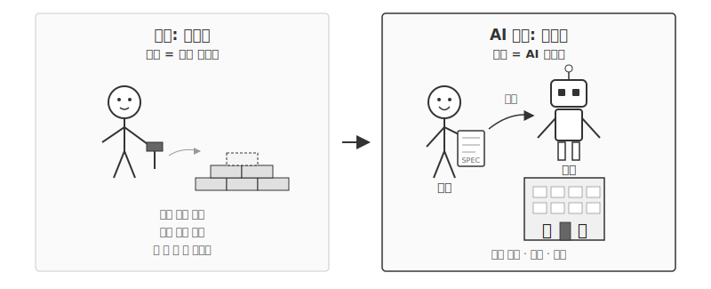
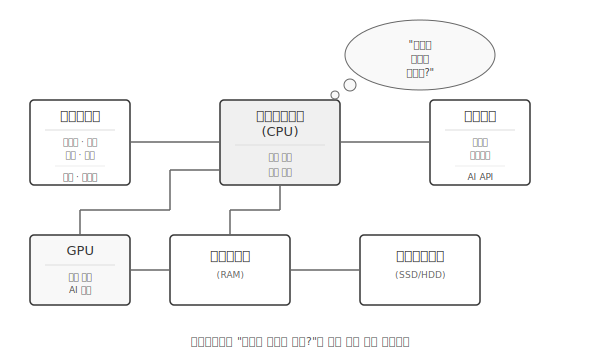
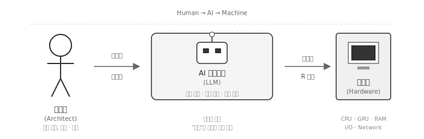
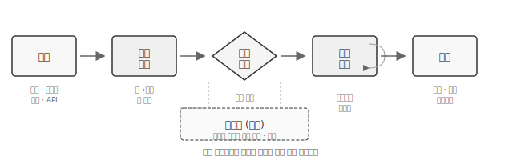
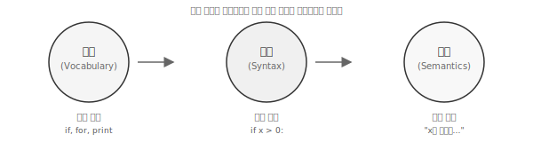
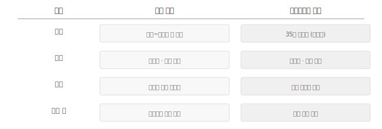
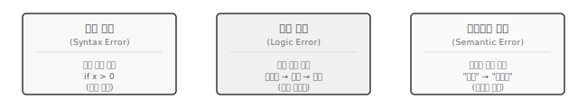

| 분류 | 예약어 | 용도 |
|---|---|---|
| 제어 흐름 | if, elif, else, for, while, break, continue | 조건 분기와 반복 제어 |
| 함수 | def, return, lambda | 함수 정의와 반환 |
| 클래스 | class | 객체 지향 클래스 정의 |
| 모듈 | import, from, as | 외부 모듈 가져오기 |
| 예외 처리 | try, except, finally, raise | 오류 감지와 처리 |
| 상수 | True, False, None | 논리값과 빈 값 |
| 연산자 | and, or, not, in, is | 논리 연산과 포함 검사 |
| 기타 | with, pass, yield, assert, del, global, nonlocal, async, await | 컨텍스트 관리, 비동기 등 |
1 프로그래밍 시작하기
1.1 왜 지금인가
2022년 11월, OpenAI가 챗GPT(ChatGPT)를 공개하면서 세상이 바뀌었다. 코드 작성, 글쓰기, 이미지 생성까지 해내는 인공지능(AI)이 공상과학에서 현실로 넘어온 순간이다. AI가 자연어 질문에 막힘없이 답하고, 복잡한 코드 초안을 순식간에 만들어내는 시대가 열렸다.
“왜 여전히 코딩을 배워야 하는가?”
계산기가 발명되었을 때 “왜 산수를 배워야 하는가?”라고 물었고, 스프레드시트가 등장했을 때 “왜 회계를 배워야 하는가?”라고 물었다. 계산기는 수학자를 대체하지 않았다. 단순 반복 계산에서 해방시켜 고차원적 문제에 집중하게 했을 뿐이다. 스프레드시트도 회계사를 없애지 않았다. 재무 데이터를 분석하고 미래를 예측하는 ’금융 모델러’로 진화시켰다.
AI도 마찬가지다. 개발자를 대체하는 것이 아니라, 한 줄 한 줄 코드를 타이핑하는 고된 노동에서 해방시킨다. 전체 시스템을 구상하고 더 큰 그림을 그리는 설계자(Architect)로 거듭나게 한다.
진짜 문제는 ’AI가 코딩을 할 수 있는가’가 아니다. “AI를 포함한 복잡한 시스템을 어떻게 신뢰하고, 관리하며, 자동화할 것인가?”가 핵심이다. AI라는 강력한 엔진을 장착한 자동차의 운전석에 앉아 있다고 생각해보라. 엔진의 힘을 최대한 활용하되, 핸들을 굳게 잡고 브레이크를 밟을 준비를 해야 한다.
1.1.1 개발자의 새로운 역할
AI 시대에 인간 개발자의 역할이 바뀌고 있다. ‘코드를 쌓는 벽돌공’에서 ‘도시를 설계하는 건축가’로.
AI는 지금까지 본 적 없는 뛰어난 벽돌공이다. 지치지 않고, 불평하지 않으며, 놀라운 속도로 벽돌(코드)을 쌓아 올린다. 하지만 어떤 건물을 지어야 할지, 도시의 맥락과 조화를 이루는지, 사람들에게 어떤 영향을 미칠지는 모른다. 그림 1.1 는 벽돌공에서 건축가로의 전환을 보여준다.

그림 1.1 왼쪽에서 과거의 개발자는 망치를 들고 직접 벽돌을 쌓는다. 오른쪽에서 AI 시대의 개발자는 설계도를 들고 AI에게 지시한다. 건축가는 어떤 문제를 풀 것인지 정의하고, 청사진을 그린다. AI가 쌓은 벽이 튼튼한지, 설계도대로 지어졌는지 끊임없이 의심하고 검증한다. 건물이 사람들과 사회에 긍정적인 영향을 미치는지 성찰하고, 잠재적 위험을 관리한다. AI의 도움을 받았더라도 완성된 건물에 대한 최종 책임은 건축가에게 있다.
더 이상 단순히 ’코딩’을 배우는 것이 아니다. 시스템을 설계하고 AI와 협업하는 법을 배운다.
1.1.2 프로그래밍 매력
프로그래밍은 개인적으로나 경제적으로 매력적인 활동이다. 유용하고, 아름답고, 똑똑한 프로그램을 만들어 다른 사람이 쓰게 하는 것은 창의적인 작업이다. 스마트폰에 설치된 수많은 앱을 보라. 프로그래머들이 사용자의 관심을 얻기 위해 경쟁하며 만든 결과물이다.
이 책에서는 사업이나 사용자를 기쁘게 하는 것보다, 일상에서 맞닥뜨리는 자료와 정보를 다뤄 삶을 생산적으로 만드는 데 초점을 맞춘다. 프로그램을 만들기 시작하면, 프로그래머이면서 동시에 자신이 만든 프로그램의 사용자가 된다. 기술을 습득하고 프로그래밍이 창의적으로 느껴지기 시작하면, 다른 사람을 위해 프로그램을 개발할 준비가 된 것이다.
1.2 컴퓨터란 무엇인가
컴퓨터는 다섯 가지 요소로 이루어진 시스템이다. 하드웨어가 물리적 기반을 제공하고, 소프트웨어가 하드웨어에 명령을 내린다. 네트워크로 다른 컴퓨터와 연결되고, 데이터를 저장하고 처리한다. 최근에는 AI가 다섯 번째 요소로 추가되어, 사람의 판단이 필요했던 영역까지 자동화하고 있다.
프로그래머는 다섯 요소를 조합해 문제를 해결한다. 하드웨어의 한계를 이해하고, 소프트웨어로 논리를 구현하며, 네트워크로 서비스를 연결하고, 데이터에서 의미를 추출한다. AI 시대에는 AI를 언제 어떻게 활용할지 판단하는 능력까지 요구된다.
1.2.1 하드웨어 구조
일상은 노트북에서 스마트폰까지 다양한 컴퓨터에 둘러싸여 있다. 컴퓨터를 많은 일을 대신해 주는 “개인비서”로 생각해보자. 컴퓨터 하드웨어는 끊임없이 “다음에 무엇을 할까요?”라고 묻도록 설계되어 있다. 그림 1.2 는 컴퓨터가 수행하는 기본 작업을 보여준다.

그림 1.2 에서 보듯이 컴퓨터는 입력을 받아 처리하고 출력한다. 텍스트와 클릭부터 음성과 이미지까지 다양한 형태의 입력을 받아들이고, “다음에 무엇을 할까요?”라는 질문에 답하며, 결과를 화면이나 파일로 내보낸다. 컴퓨터가 질문에 답하려면 여러 부품이 협력해야 한다. 노트북이나 스마트폰을 분해하면 여섯 가지 핵심 부품을 발견할 수 있다. 각 부품은 고유한 역할을 맡아 전체 시스템이 작동하도록 돕는다. 그림 1.3 는 부품 간 연결 구조를 보여준다.

그림 1.3 에서 CPU가 중심에 위치하고, 입출력장치, 네트워크, GPU, 메모리가 연결된다. 는 “다음에 뭘 할까?”라는 질문에 답하는 두뇌다. 순차적으로 명령을 처리하며, 3.0 GHz CPU라면 초당 30억 개의 범용 연산을 수행한다. GPU는 CPU와 다른 방식으로 일한다. 수천 개의 작은 코어가 동시에 계산을 처리하는 병렬 처리에 특화되어 있어, AI 모델 학습과 추론에 필수적인 부품이 되었다.
주기억장치(RAM)는 CPU가 즉시 필요한 정보를 저장한다. 빠르지만 전원이 꺼지면 내용이 사라진다. 보조기억장치(SSD/HDD)는 느리지만 전원이 꺼져도 정보가 유지된다. 입출력장치는 키보드와 마우스로 텍스트와 클릭을 입력받고, 화면과 파일로 결과를 출력한다. AI 시대에는 음성과 이미지도 자연스러운 입출력 수단이 되었다. 네트워크는 인터넷과 클라우드를 통해 외부 데이터를 주고받으며, 최근에는 AI API 호출의 통로 역할까지 담당한다.
프로그래머는 CPU에 “다음에 무엇을 실행하라”고 지시한다. 필요에 따라 GPU에 병렬 연산을 맡기고, 메모리에 데이터를 저장하며, 네트워크를 통해 외부 서비스와 통신한다.
과거에는 프로그래머가 컴퓨터와 직접 대화했다. 문법을 외우고, 한 줄 한 줄 코드를 작성해야 했다. AI 시대에는 중간에 새로운 계층이 등장했다. 프로그래머는 자연어로 의도를 전달하고, AI 에이전트가 맥락을 이해해 파이썬이나 R 코드로 번역한다. 컴퓨터는 여전히 코드를 실행하지만, 코드를 작성하는 주체가 달라졌다. 그림 1.4 은 사람 → AI → 기계로 이어지는 새로운 흐름을 보여준다.

그림 1.4 에서 사용자는 자연어와 테스트로 의도를 전달하고, AI 에이전트가 파이썬이나 R 코드로 변환해 컴퓨터에 전달한다. 프로그래머의 역할은 코드 작성에서 의도 정의와 검증으로 이동했다. AI가 생성한 코드가 원래 의도와 맞는지 확인하고, 오류가 있으면 수정을 요청한다. “의도”만 명확하면 실행 가능한 프로그램이 나온다. 문법 암기보다 문제 정의와 결과 검증 능력이 중요해진 이유다.
1.2.2 프로그램이란
프로그램(Program)은 특정 작업을 수행하는 파이썬 문장의 집합이다. hello.py처럼 한 줄짜리도 프로그램이고, 수천 줄에 달하는 복잡한 시스템도 프로그램이다. 프로그램의 핵심은 반복적인 작업을 자동화한다는 데 있다.
소셜 미디어 게시물에서 가장 자주 사용된 단어를 찾는 연구를 한다고 가정하자. 아래 텍스트에서 가장 많이 나오는 단어와 빈도를 손으로 세어보라.
the clown ran after the car and the car ran into the tent
and the tent fell down on the clown and the car두 줄짜리 문장도 손으로 세면 시간이 걸리고 실수하기 쉽다. 수백만 줄이라면 어떨까? 파이썬 프로그램은 이러한 단순 반복 작업을 순식간에 처리한다.
text = 'the clown ran after the car and the car ran into the tent and the tent fell down on the clown and the car'
words = text.split()
counts = dict()
for word in words:
counts[word] = counts.get(word, 0) + 1
bigcount = None
bigword = None
for word, count in counts.items():
if bigcount is None or count > bigcount:
bigword = word
bigcount = count
print(bigword, bigcount)
# 출력: the 7위 코드는 텍스트를 단어로 쪼개고, 각 단어가 몇 번 등장했는지 세어, 가장 많이 나온 단어를 출력한다. 지금 당장 모든 문법을 이해할 필요는 없다. 프로그램이 어떤 일을 하는지 대략적인 흐름만 파악하면 된다. 파이썬 문법은 앞으로 여러 장에 걸쳐 차근차근 배운다.
1.2.3 프로그램 구성요소
프로그램 작성에 사용되는 기본 패턴이 있다. 파이썬만이 아니라 기계어부터 고수준 언어까지 모든 언어에 공통된다. 그림 1.5 는 여섯 가지 핵심 구성요소를 보여준다.

그림 1.5 에서 프로그램은 입력에서 시작해 출력으로 끝난다. 입력은 파일, 키보드, 센서, API 등 외부에서 데이터를 가져오는 것이다. 순차 실행은 작성된 순서대로 위에서 아래로 한 줄씩 명령을 처리한다. 조건 실행은 특정 조건을 확인하고 분기를 선택해 실행하거나 건너뛴다. 반복 실행은 조건이 충족될 때까지 같은 명령을 되풀이한다. 출력은 처리 결과를 화면, 파일, 네트워크 등으로 내보낸다.
그림 1.5 하단 재사용(함수)은 특별한 패턴이다. 자주 쓰는 명령문 묶음에 이름을 붙여 저장하고, 필요할 때 불러 쓴다. 순차, 조건, 반복 실행 어디서든 호출할 수 있어 코드 중복을 줄이고 구조를 명확하게 만든다.
간단해 보이지만 그렇지 않다. 프로그래밍의 예술은 기본 요소를 조합해 사용자에게 유용한 것을 만드는 데 있다.
1.3 파이썬으로 대화하기
프로그래밍 언어도 “언어”다. 한국어나 영어처럼 단어가 있고, 단어를 배열하는 규칙이 있으며, 단어 배열에는 특정한 의미가 전달된다. 다만 대화 상대가 사람이 아니라 컴퓨터라는 점이 다르다. 컴퓨터는 모호함을 이해하지 못하기 때문에, 프로그래밍 언어는 인간 언어보다 훨씬 단순하지만 엄격하다.
1.3.1 언어의 구성요소
인간 언어든 프로그래밍 언어든 모든 언어는 세 가지 요소로 이루어진다. 사용할 수 있는 단어 목록이 있고, 단어를 배열하는 규칙이 있으며, 배열된 문장이 전달하는 의미가 있다. 그림 1.6 는 어휘, 문법, 의미라는 공통 구성요소를 보여준다.

그림 1.6 에서 어휘(Vocabulary)는 언어가 사용하는 단어 목록이다. 한국어에는 수십만 개의 단어가 있고, 파이썬 3.10+ 기준 35개 예약어가 있다. 문법(Syntax)은 단어를 배열하는 규칙이다. “나는 밥을 먹는다”는 올바른 한국어 문장이고, if x > 0:은 올바른 파이썬 문장이다. 의미(Semantics)는 문장이 전달하는 뜻이다. 문법적으로 올바른 문장이라도 의미가 없을 수 있다. “무색의 녹색 아이디어가 맹렬히 잠든다”는 문법적으로 완벽하지만 의미를 파악하기 어렵다.
1.3.2 인간 언어와 프로그래밍 언어
어휘, 문법, 의미라는 구성요소는 같지만, 인간 언어와 프로그래밍 언어는 성격이 크게 다르다. 인간 언어는 수십만 개의 단어를 유연한 규칙으로 조합하고, 맥락에 따라 의미가 달라지는 것을 허용한다. 프로그래밍 언어는 수십 개의 단어를 엄격한 규칙으로 조합하고, 의미는 항상 하나로 고정된다. 그림 1.7 은 네 가지 측면에서 차이를 비교한다.

그림 1.7 에서 가장 눈에 띄는 차이는 어휘의 크기다. 한국어 화자는 평균 5만 개 이상의 단어를 알고, 영어 원어민은 2만~3만 개를 구사한다. 반면 파이썬 예약어는 35개에 불과하다. 문법도 다르다. “나 밥 먹었어”처럼 조사를 생략해도 의사소통이 되지만, 파이썬에서 콜론 하나를 빠뜨리면 프로그램이 멈춘다. 의미 해석도 차이가 크다. “배가 아프다”에서 “배”가 신체 부위인지 과일인지 선박인지는 맥락에 따라 달라지지만, 파이썬에서 bae는 항상 같은 변수를 가리킨다.
노트프로그래밍 언어가 엄격한 이유
컴퓨터는 초당 수십억 번의 연산을 수행한다. 모호함이 허용되면 매 연산마다 “어떤 의미로 해석할까?”를 판단해야 하고, 속도가 급격히 떨어진다. 프로그래밍 언어가 엄격한 이유는 컴퓨터의 한계 때문이 아니라, 빠른 실행을 위한 설계 선택이다. 인간이 모호함을 해결하고, 컴퓨터는 명확한 지시만 실행한다.
1.3.3 예약어와 문법
파이썬 어휘의 핵심은 예약어(reserved words)다. 예약어는 파이썬이 특별한 의미로 인식하는 단어로, if를 만나면 “조건을 검사하라”는 뜻으로만 해석한다. 프로그래머는 예약어 외에 자신만의 단어도 만들 수 있는데, 이를 변수(Variable)라 부른다. 변수 이름은 my_data, total_count처럼 자유롭게 지을 수 있지만, 예약어를 변수 이름으로 쓸 수는 없다. if = 10이라고 쓰면 파이썬은 혼란에 빠진다.
강아지 훈련에 비유하면 이해가 쉽다. 강아지에게 “앉아”, “기다려”, “가져와” 같은 특별한 명령어가 있듯이, 파이썬에도 정해진 명령어가 있다. 예약어가 아닌 말을 하면 강아지는 물끄러미 쳐다볼 뿐이고, 파이썬은 오류를 뱉는다. 다만 강아지와 달리 파이썬은 이미 완벽하게 훈련되어 있어서, try라고 말하면 매번 정확히 같은 동작을 수행한다.
표 1.1 은 파이썬 3.10+ 기준 35개 예약어를 분류별로 정리한 것이다. 파이썬 REPL에서 help("keywords")를 입력하면 전체 목록을 확인할 수 있다.
예약어 35개를 모두 외울 필요는 없다. 프로그램을 작성하면서 자연스럽게 익히게 된다. 지금은 파이썬에 말을 거는 가장 간단한 방법부터 시작하자. 내장 함수 print에 따옴표로 감싼 메시지를 전달하면, 파이썬이 해당 메시지를 화면에 출력한다.
print("헬로 월드!")위 코드는 파이썬 문법에 맞는 완전한 문장이다. print는 “출력하라”는 명령이고, 괄호 안의 "헬로 월드!"는 출력할 내용이다. 따옴표는 “이것은 텍스트 데이터다”라고 파이썬에게 알려주는 역할을 한다. 따옴표 없이 print(헬로 월드!)라고 쓰면 파이썬은 헬로라는 변수를 찾으려 하고, 찾지 못하면 오류를 낸다.
1.3.4 인터프리터와 대화
간단한 문장을 만들었으니, 이제 파이썬과 대화를 시작해보자. 파이썬을 공식 웹사이트에서 설치한 뒤, 터미널이나 명령 프롬프트에서 python을 입력하면 인터프리터가 인터랙티브 모드로 시작된다. 화면에 >>> 프롬프트가 나타나면 파이썬이 대화할 준비가 된 것이다.
Python 3.11.8 (tags/v3.11.8:db85d51, Feb 6 2024, 22:03:32) [MSC v.1937 64 bit (AMD64)] on win32
Type "help", "copyright", "credits" or "license" for more information.
>>>인터랙티브 모드는 REPL(Read-Eval-Print Loop)이라고도 부른다. 그림 1.8 에서 볼 수 있듯이, 사용자가 코드를 입력하면(Read), 파이썬이 이를 실행하고(Eval), 결과를 출력한 뒤(Print), 다시 입력을 기다리는(Loop) 과정이 끊임없이 반복된다. 이 순환 구조 덕분에 코드를 한 줄씩 실행하며 즉각적인 피드백을 받을 수 있어, 새로운 문법을 익히거나 아이디어를 빠르게 시험해보기에 안성맞춤이다.

파이썬 언어를 전혀 모른다고 가정하고, 외계 행성에 착륙한 우주비행사처럼 말을 걸어보자.
>>> I come in peace, please take me to your leader
File "<stdin>", line 1
I come in peace, please take me to your leader
^^^^^
SyntaxError: invalid syntax영어로 말을 걸었지만 파이썬은 알아듣지 못한다. 파이썬 문법에 맞게 다시 시도해보자.
>>> print("헬로 파이썬!")
헬로 파이썬!
>>> print('당신은 하늘에서 온 전설적인 신이 분명합니다')
당신은 하늘에서 온 전설적인 신이 분명합니다이번에는 대화가 잘 진행된다. 하지만 사소한 실수를 저지르면 파이썬은 곧바로 오류를 내며 대화를 중단한다. 파이썬은 복잡하고 강력하지만 구문(Syntax)에 엄격하기 때문에, 정해진 규칙대로 말해야만 알아듣는다. 대화를 끝내려면 exit() 또는 quit()를 입력한다.
>>> good-bye
NameError: name 'good' is not defined
>>> exit()good-bye가 오류를 낸 이유는 파이썬이 good이라는 변수를 찾으려 했기 때문이다. 하이픈(-)은 파이썬에서 빼기 연산자이므로, good - bye는 “good이라는 변수에서 bye라는 변수를 빼라”는 뜻으로 해석된다.
힌트인터프리터와 컴파일러
파이썬은 사람이 읽고 쓸 수 있으면서 컴퓨터도 처리할 수 있는 고수준(High-level) 언어다. 자바, C++, PHP, 루비, 자바스크립트 등도 고수준 언어에 속한다. 하지만 CPU가 이해하는 것은 0과 1로만 이루어진 기계어(machine language)뿐이다. 기계어는 01010001110100100101010000001111처럼 생겼는데, 단순해 보여도 실제로는 파이썬보다 훨씬 복잡하다. 기계어로 직접 코드를 작성하는 프로그래머는 극소수이며, 대신 고수준 언어를 기계어로 변환하는 번역기(translator)를 사용한다.

그림 1.9 에서 보듯이 번역기는 인터프리터(Interpreter)와 컴파일러(Compiler) 두 종류로 나뉜다. 인터프리터는 소스 코드를 한 줄씩 읽고 즉석에서 실행하며, 파이썬이 여기에 속한다. 컴파일러는 전체 소스 코드를 먼저 기계어로 번역해 실행 파일을 만든 뒤 실행한다. C, C++, Go, Rust 등이 컴파일러 방식을 사용한다.
인터프리터가 즉각적인 피드백을 제공한다면, 컴파일러는 왜 여전히 쓰일까? 핵심은 실행 속도다. 컴파일러는 실행 전에 전체 코드를 분석하고 최적화하므로, 같은 작업을 수십~수백 배 빠르게 처리한다. 운영체제, 게임 엔진, 데이터베이스처럼 성능이 생명인 소프트웨어는 컴파일러 언어로 작성된다. 파이썬 인터프리터 자체도 C 언어로 만들어졌다(CPython). 결국 두 방식은 “개발 속도 vs 실행 속도”라는 상충 관계에 있으며, 용도에 따라 선택한다.
1.4 오류와 디버깅
앞서 보았듯이 파이썬 코드는 명확하게 작성해야 한다. 작은 실수 하나가 프로그램 전체를 멈추게 만들기도 한다. 초보자는 파이썬이 냉정하다고 느끼지만, 파이썬은 감정 없는 도구일 뿐이다. 오류 메시지는 비난이 아니라 도움 요청이다. “입력한 것을 이해하지 못하겠다”고 말하는 것뿐이므로, 파이썬과 싸워봐야 소용없다.
>>> primt("안녕 세상!")
NameError: name 'primt' is not defined
>>> 나는 파이썬이 싫어!
SyntaxError: invalid syntax프로그램이 복잡해지면 그림 1.10 에서 보는 것처럼 세 종류의 오류를 만나게 된다. 구문 오류(Syntax Error)는 가장 흔하고 고치기 쉽다. 파이썬 문법에 맞지 않는다는 뜻이며, 오류 위치를 알려주지만 실제 원인은 앞줄에 있을 수도 있다. 논리 오류(Logic Error)는 구문은 맞지만 실행 순서가 잘못된 경우다. “물병에서 한 모금 마시고, 가방에 넣고, 도서관으로 걸어가서, 물병을 닫는다”처럼 순서가 뒤바뀌면 원하는 결과를 얻지 못한다. 의미론적 오류(Semantic Error)는 구문도 맞고 순서도 맞지만 의도한 대로 동작하지 않는 경우다. 식당 가는 길을 알려주면서 “왼쪽”이라고 해야 할 곳에서 “오른쪽”이라고 말한 것과 같다. 어떤 오류든 파이썬은 요청받은 대로 충실히 실행할 뿐이다.

처음에 개념이 잘 와닿지 않아도 기죽을 필요 없다. 말하기를 배울 때도 처음 몇 년은 옹알이를 하고, 어휘에서 문장으로, 문장에서 문단으로 넘어가는 데 몇 년이 걸린다. 프로그래밍도 마찬가지다. 이 책은 파이썬을 빠르게 배울 수 있도록 정보를 제공하지만, 새 언어를 익히는 것처럼 자연스럽게 느껴지기까지 시간이 필요하다. 꼭 순서대로 읽을 필요는 없으니 앞뒤를 넘나들며 읽어도 좋다.
첫 프로그래밍 언어를 배울 때는 “유레카!” 순간이 몇 번 찾아온다. 망치와 끌로 돌을 깎아 조각품을 만드는 과정과 비슷하다. 뭔가 특별히 어렵다면 밤새 붙잡고 있지 말고, 쉬거나 낮잠을 자거나 간식을 먹거나 다른 사람(또는 강아지)에게 문제를 설명해보라. 머리를 식힌 뒤 다시 시도하면 의외로 쉽게 풀리는 경우가 많다.
💡 생각해볼 점
컴퓨터는 “다음에 무엇을 할까?”라는 질문을 끊임없이 던지는 기계이고, 프로그래머는 질문에 대한 답을 미리 작성해두는 사람이다. CPU가 연산을 수행하고, 메모리가 데이터를 보관하며, 저장장치가 전원이 꺼져도 정보를 유지한다는 사실은 변하지 않는다. 달라진 것은 답을 작성하는 방식이다.
전통적인 프로그래밍 학습에서는 구문을 암기하고 직접 코드를 타이핑하는 것이 핵심이었다. 하지만 AI 시대에 접어들면서 프로그래머 역할이 “코드 작성자”에서 “의도 설계자”이자 “코드 검토자”로 이동하고 있다. 키보드로 코드를 얼마나 빨리 칠 수 있느냐보다, 원하는 동작을 얼마나 명확하게 정의할 수 있느냐가 중요해졌다.
다음 장에서는 의도를 명확하게 정의하는 방법을 다룬다. 테스트 코드를 통해 “이렇게 동작해야 한다”는 명세를 작성하고, AI에게 전달하여 실제 코드를 생성받는 워크플로우를 배운다.